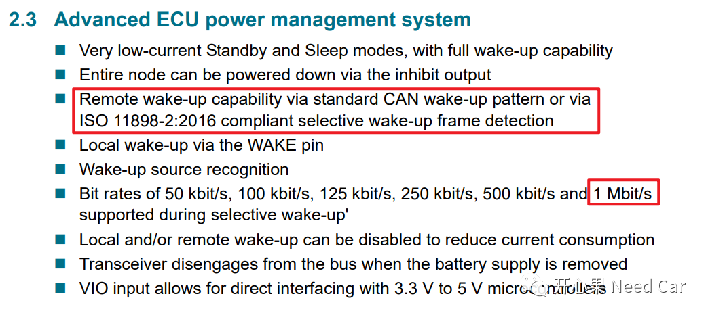
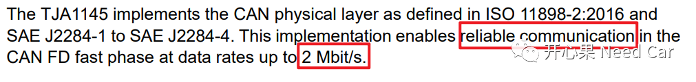
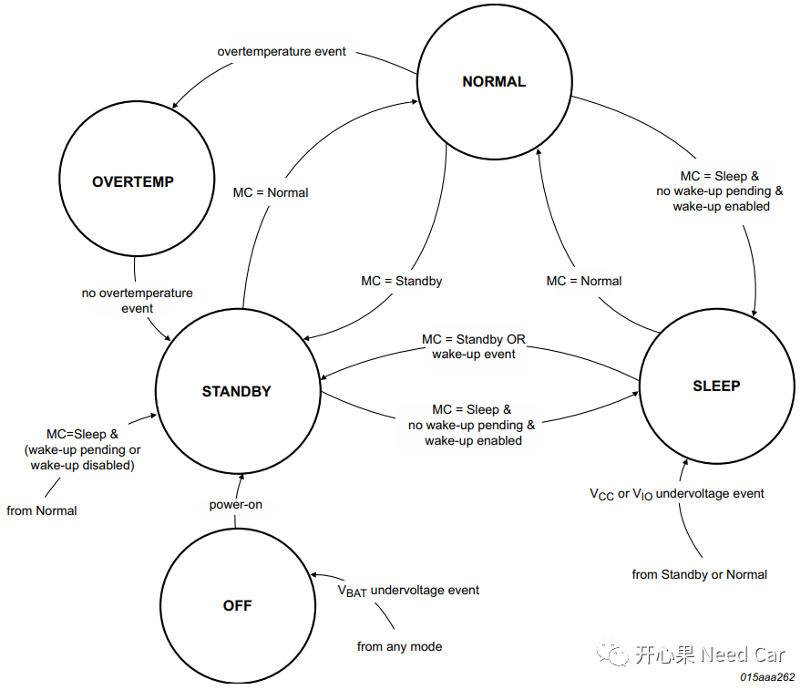
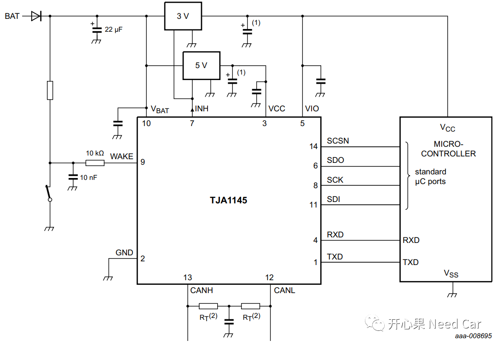
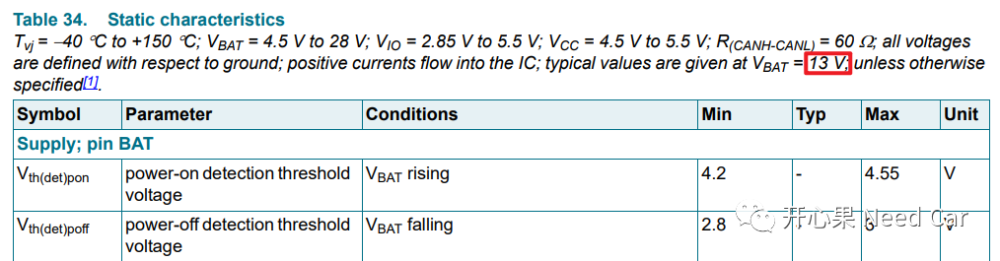
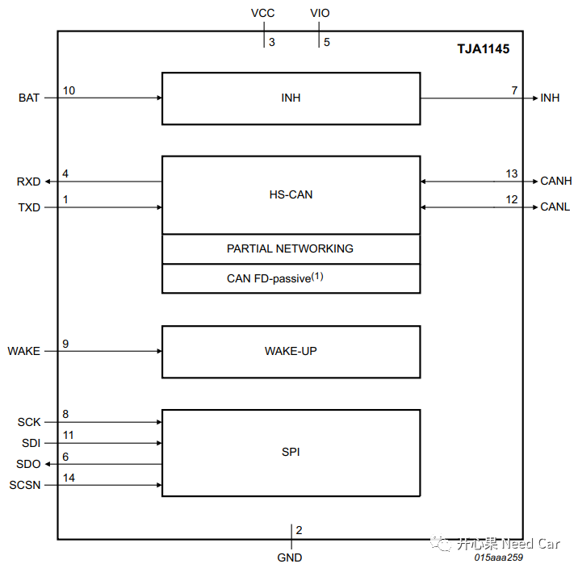

为什么要聊这个话题呢？在实际的项目开发中，很多问题会牵扯到ECU的上下电流程，尤其时间相关的问题。如果不能清楚自家产品的供电时序，想必在解决类似问题时，会很伤脑壳。本文咱们聊聊ECU如何被供电的，希望能给读者拓展一些解决问题的思路。
如果你的单位是Tier1，相对比较有优势，因为做产品，找硬件组可以拿到产品对应的PCB原理图；如果你的单位只做纯软件服务或者没有PCB原理图，对软件工程师来说，解决问题就少了一把利器。本文从Transceiver出发，聊一下我们关切的ECU供电问题。
其实前面讨论过Transceiver与ECU连接关系，可以参考前文Autosar网络管理，你不能不清楚节点的唤醒方式。
提示：本文以TJA1145为例
在聊ECU如何被供电之前，先了解一下TJA1145的特性。TJA1145这款Transceiver的应用目前普及率很高，之所以普及率高是有它的道理的，先看一下它的特性：
支持经典CAN唤醒模式的检测;
唤醒的最高检测速率可达1Mbit/s;
....
如上两点是我比较关注的，因为这两点影响实际的开发设计。解读一下这两点的特性：说白了就是TJA1145的唤醒功能适用于经典CAN。TJA1145也支持CANFD，如果是CANFD类型，又想让特定的Frame唤醒ECU，进而唤醒网络，那么TJA1145接收的Frame最高速率不能超过1Mbit/s。
我们知道，对于CAN和CANFD，其头部和尾部的速率相同(为了兼容)，项目中多数使用500Kbit/s，而CANFD的数据段速率是可变的，从稳定性上来说，数据段一般会使用2Mbit/s，虽然CANFD可以达到5M，甚至8M，但是在实际的应用中，其稳定性还不行，主要是充放电容速率导致。所以目前，项目多数还是使用2Mbit/s的通信速率。其实，这一点看Transceiver的Data sheet是可以获知的，比如TJA1145的Data Sheet中就已经描述的很清楚了，可靠的通信速率最高2Mbit/s。
刚才说到数据段的速率是可变的，通常项目使用CANFD时，也会将数据段的速率提高到2Mbit/s，不然岂不是浪费资源。如果使用CANFD，数据段速率提升到2Mbit/s，那么TJA1145的唤醒过滤功能就不能使用，所以这一点在设计时就需要留意。看一下需求中，CANFD数据段速率是要求500Kbit/s还是2Mbit/s，当然，对于500Kbit/s的经典CAN，指定报文的唤醒功能在TJA1145上就可以做到，对于CANFD Frame，数据段速率如果是500Kbit/s（实际项目中，确实会有这种大马拉小车的情况），TJA1145也能做到指定报文唤醒的功能。开发中，如果能用硬件做到的功能就尽量不要用软件实现，比如本文聊的ECU唤醒，进而网络唤醒的功能。TJA1145可以实现的功能，就没必要软件再去识别唤醒的报文是否是有效的网络管理报文，徒增资源的开销和维护成本。尤其涉及到PN功能的网络唤醒时，使用TJA1145的过滤功能，可以使得开发工作简化很多。

TJA1145系统控制器的状态跳转由SPI指令/特定事件控制，这里不再细说，这是为了聊下面的供电做铺垫。
如下图，信息很多，我们分析几个重要的点。

- BAT（Vbat）就是蓄电池，即KL30电，也就是说TJA1145是被常供电的，一般KL30电压为12V，而Data Sheet中给出的典型电压值为13V，如下所示。既然TJA1145在整车中是被常供电的，意味着：只要KL30供电稳定（保持在12V），TJA1145就不会进入OFF Mode，除非蓄电池亏电，导致Vbat电压低于其阈值2.8V。

- Vbat既然给TJA1145稳定供电，那么ECU是如何下电的呢？当ECU需要下电的时候，即切断Vcc时，会通过SPI给TJA1145发送进入Sleep Mode的指令，如果TJA1145在Sleep Mode，INH Pin脚会处于高阻状态，此时与TJA1145连接的3V和5V电源管理模块禁能，即无法给主芯片提供Vcc电，也无法给TJA1145提供Vcc和Vio电。所以主芯片会完全的断电，实现了最大程度的节能；
- 当TJA1145进入Sleep Mode模式时，如果检测到总线的wake-up event（可以是特定的网络管理报文，因为TJA1145支持过滤功能），TJA1145切换到Standby Mode，在此模式下，INH Pin脚被拉低，3V和5V电源管理模块使能，从而主芯片/TJA1145被供电，芯片中的软件得以运行， 之后主芯片通过SPI给TJA1145发送进入Normal Mode指令，到此，通信可以真正的建立，报文的收/发成为可能，之所以说可能，是因为要等ECU识别收到的报文是否是网络管理报文，且有效，只有是有效的唤醒源，ComM才允许通信栈打开，之后的应用报文得以外发。到这里，回答了本文关切的问题，即ECU如何被供电的？
- 注意：Vbat与INH Pin的连接关系如下图所示，这里大家是不是有这样的疑问：INH与Vbat连接，而Vbat = 12V，那INH Pin是不是一直保持12V？不是的，INH的状态与所连接的设备相关，感兴趣可以查阅，我不太清楚，不在这误导大家。我们只需要清楚，TJA1145处于不同的Mode时，INH的状态会在高阻与非高阻之间切换即可。

如上聊的这些，并没有讨论KL15供电的情况，这个可以找时间再和大家侃侃。主要想以TJA1145为例，让大家对ECU的供电有一个认识，当然，也希望和更多的朋友一起讨论更多的技术。
TJA1145 High-speed CAN transceiver for partial networking.pdf